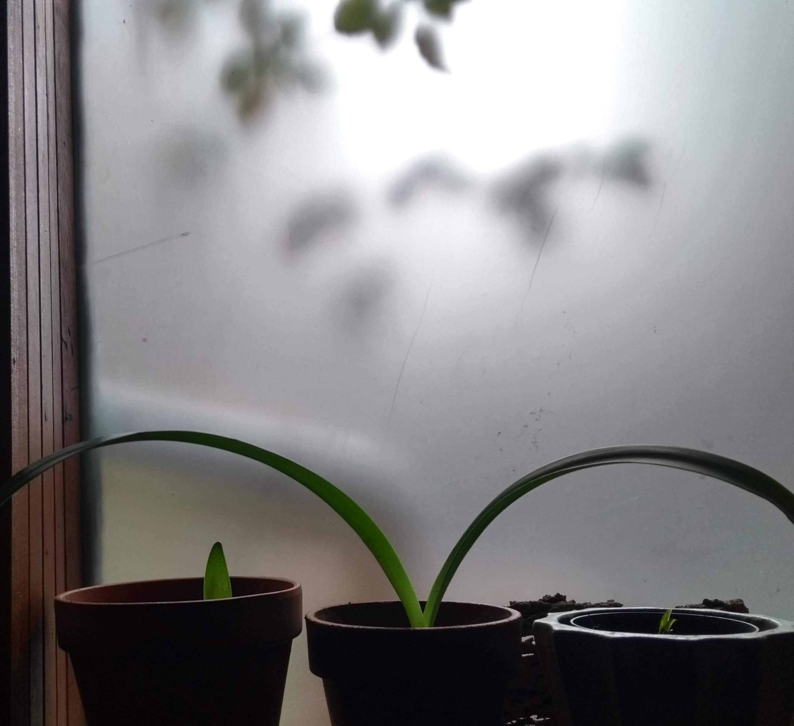

Myōkyō a commencé sa formation avec Jōshu Roshi en 1980 et a déménagé au Mont Baldy en 1985. Elle a été ordonnée en tant que moine Zen en 1986 au Mt. Baldy Zen Center, et pratiqué dans les centres zen du mont Baldy et Rinzai-ji à Californie, Bodhi Manda et Albuquerque Zen Centres au Nouveau-Mexique avant de retourner au Canada en 1995. Elle a été ordonnée Zen Osho (Prêtre) en 1999, recevant le nom religieux Zengetsu, et a continué à étudier avec Jōshū Roshi jusqu'à sa mort en juillet 2014.
Le Centre Zen de la Main a été fondé en 1995 par Myōkyō, avec l'aide de généreux donateurs. En 2009, son nom est changé pour Enpuku-ji avec le déménagement vers son nouvel emplacement au 4620 rue Saint-Dominique. Enpuku-ji est le nom du temple donné à Myōkyō par son professeur. La signification du kanji pour Enpuku-ji est Temple de la pleine prospérité. Enpuku-ji est un centre affilié du Rinzai-ji à Los Angeles, la maison mère d'un réseau de centres qui s'engagent à pratiquer le Rinzai Zen comme l'a enseigné Kyōzan Jōshū Sasaki, Roshi. Il s'est développé au cours de ses deux premières décennies, au point d'être en mesure de fournir un environnement de pratique solide et cohérent aux membres, aux nouveaux arrivants, aux moines laïcs et aux résidents de pratique.
Une discussion sur le dharma est occasionnellement proposée lors de la séance de zazen du samedi matin et fait partie des programmes de retraite.
“The real Zen practice is to realize that you have the
center of gravity of the universe. When you realize
that you have the center of gravity which is one with
the center of gravity of the universe, then you unify
the world and you are unified by the world. You are
embraced by the world. When you unify the world
and you are unified by the world, that center of
gravity is only one. So you cannot call it your own
center of gravity. That center of gravity doesn’t
need to call itself “self,” because there is no object.
Since it unifies the world. There is no object. It is
very difficult to understand, so you need more zazen
to experience it.”
- Kyōzan Jōshū Sasaki, Rōshi
Extrait de Buddha is the Center of Gravity
Ceux qui s'intéressent à la pratique formelle du Zen sont invités à assister à une séance d'iniation afin de rejoindre le programme régulier de zazen. La séance a généralement lieu le deuxième samedi de chaque mois à partir de 11h30 à 13h00. La séance décrit la forme et l'étiquette de notre pratique, ainsi qu'un bref historique du Centre et de Jōshū Rōshi.
Veuillez confirmer votre présence par email à info@enpuku-ji.org.
L'entrée principale de l'Enpuku-ji se trouve dans le jardin. Suivez le chemin vers le à gauche du parking et franchissez la porte avec le logo Enpuku-ji.
Si vous avez pratiqué à Enpuku-ji dans le passé ou si vous avez pratiqué avec l'un des confrères moines de Myokyo, et que vous êtes intéressé à rejoindre les séances de zazen Zoom, nous vous demandons d'envoyer un e-mail à info@enpuku-ji .org pour plus d'instructions sur l'adhésion. À l’heure actuelle, les nouveaux arrivants n’auront aucune possibilité de pratiquer à l’Enpuku-ji car il n’y aura pas de séances d’instruction au cours des prochains mois. Veuillez nous contacter à la même adresse e-mail si vous êtes intéressé par une session de cours en ligne en direct en été/automne.
En raison de la pandémie, l'Enpuku-ji Zen ne reçoit plus d'invités comme il le fait depuis sept ans. Ce revenu était essentiel pour couvrir le loyer élevé de l'Enpuku-ji. Si vous avez bénéficié de la pratique au Centre Zen dans le passé, nous vous demandons d'envisager une contribution pour aider à couvrir les dépenses à mesure que nous progressons. Le lien pour faire des contributions via CanadaHelps se trouve ailleurs sur le site Web. L'aide sous de nombreuses formes reçue jusqu'à présent est grandement appréciée.

Le Centre Zen continue de garder ses portes ouvertes et un horaire zazen en place grâce à vos cotisations mensuelles. Faites votre don, après votre séance pour nouveaux arrivants, via le liens vers CanadaHelps.
Seiun Thomas Henderson, autism and education specialist, was an integral part of Enpuku-ji for a decade, assisting Myōkyō with all of the programs/events
that the Zen Centre offers, until he moved to Columbia in early 2023. Seiun has built a zendo on his farm and has established a weekly zazen group in the small city of Pereira.
Ekyō Diane Poissant, retired administrator and educator, lives in
Kingston, Ontario. She established a zendo, Ryokusui-an, in her home
in 2013, where a regular schedule of zazen is offered.
Jion Ned Shepard, DJ, producer, musician and remixer, was a regular
practitioner at Enpuku-ji for eight years before moving to
Los Angeles, CA in 2012. He created a beautiful zendo in his
Beverly Hills home for which Myōkyō bestowed the name, Kattō-an - Hermitage of Entangling Vines. Jion lends invaluable support to Rinzai-ji, Myōkyō's motherhouse, in LA.
The tokudo-shiki (ordination) ceremony for Seiun and Jion was held at Enpuku-ji in January, 2011 and that for Ekyō at Ryokusui-an in October, 2013.
Volunteers and the understanding of dana have always been important aspects of the Zen Centre. Dana is considered to be the Buddhist practice of cultivating generosity, or some might say, selfless spontaneous giving.
Enpuku-ji has always had much help from members and from friends of the Zen Centre, those who do not come to practice but want to support the existence and future of Enpuku-ji. We have help with the garden, the current Zen Centre dog, Listen, house maintenance, snow-shovelling, the website, translation, and so on. Most of this help goes unnoticed by others but is essential to the spirit and stewardship of Enpuku-ji.
The Montreal Zen Poetry Festival was conceived of by several
young poets who were practitioners at the Zen Centre
around 2005. We held three festivals – 2007, 2009 and
2011. We have
been fortunate to have hosted the likes of Jane Hirshfield,
Robert Bringhurst, Red Pine, Steve Sanfield, David Budbill,
Peter Levitt, Chase Twichell, Kaz Tanahashi and others. The
Montreal Zen Poetry Festival, a small niche festival,
led to rich collaborations with McGill University and with the
Blue Metropolis Montreal International Literary Festival over
the years.
Enpuku-ji published two collections of the works of our 2007
and 2009 invitees under the imprint of Enpuku-ji Press. The
collections, "Forget the Words" and "Words have no Meaning",
are available for purchase at the Zen Centre.
The Rumi Li Zen Poetry Library, housed on the second
floor at Enpuku-ji, has a special collection of Zen poetry and haiku
works. People
are invited to sit and read, by appointment.
An offshoot of the Festivals has been the acquisition by
Myōkyō and a former resident practitioner and Festival
volunteer, Ian Sullivan Cant, of a small letterpress.
The
rabbit fish logo, for the 2009 festival, was created by Ian
who is a very fine zine artist and illustrator.
Enpuku-ji is incorporated under Federal law as a charitable
organization and, as such, issues tax receipts for donations and
membership payments via CanadaHelps. The Centre is supported by general donations,
membership payments, retreat and ceremony fees, resident and
guest practitioner income and donations to the Abbot, Membership, General Donations, Practice Scholarship and Temple Maintenance Funds.
Those attending regularly
are asked to contribute as a member after
their newcomers session.
Donations and membership payments are payable online through
CanadaHelps.
To make such a payment via CanadaHelps,
simply click on the “Contribute” button on this page. A screen with
the Enpuku-ji logo will appear. Then choose "Donate Monthly" for a
membership payment and follow the instructions. If you wish to make
a single donation, click on "Donate Now" and, on the next screen,
after entering the amount, go to “Fund/Designation” and choose
which fund you would like to contribute to. CanadaHelps allows
donors to download a tax receipt at any time.
Payments other than donations and membership payments are not
tax-receiptable and are made by Interac e-transfer to info@enpuku-ji.org.
$100/month
$40/month
$30/month
$50/month
$20/month
non-practicing supporter
Personne ne sera exclu de pratiquer au Centre Zen en raison de l’impossibilité de payer.
Il est possible de prendre d'autres dispositions impliquant du travail au Centre Zen et/ou des contributions en nature.